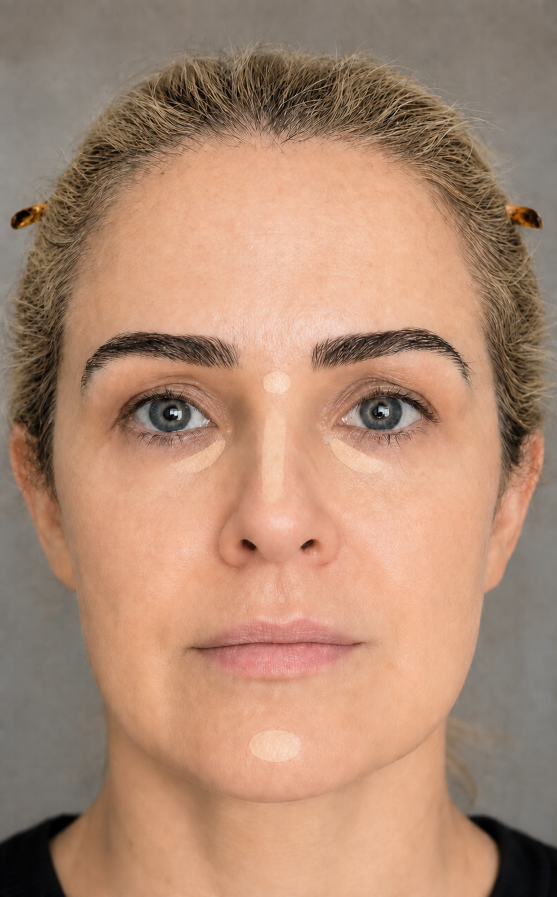

Olhar descansado
Aplique um arco estreito na região mais escura abaixo dos olhos, começando no canto interno. Não desça em triângulo até a maçã.
Ilumine, neutralize e equilibre pequenas sombras — preservando a leveza da sua pele.
Aplique um arco estreito na região mais escura abaixo dos olhos, começando no canto interno. Não desça em triângulo até a maçã.
Um toque entre as sobrancelhas, no centro do nariz e no queixo traz equilíbrio sem deixar o centro do rosto excessivamente claro.

Use corretivo do tom da pele para corrigir. Se a sombra for mais intensa, faça antes uma camada mínima de pêssego suave.
Espalhe com batidinhas de esponja pequena ou dedo anelar. Deixe as bordas se fundirem à base, sem apagar a textura.
01Comece com metade da quantidade que imagina precisar.
02Concentre o produto apenas na sombra; a borda deve quase desaparecer.
03Espere alguns segundos e só então construa uma segunda camada, se necessário.